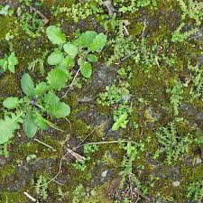
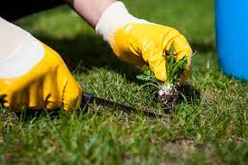

A todos nos encanta tener un jardín lleno de flores, o un huerto que brinda una gran cosecha. Pero lo cierto es que, para conseguirlo, debemos mantener el huerto bien cuidado, lo que conlleva a controlar y eliminar las malas hierbas.
Quitar las malas hierbas es una de las principales tareas del cuidado del jardín.
Eliminar especies malignas resultará favorable para el desarrollo y crecimiento de tus flores, vegetales y plantas, además de proporcionar un mejor aspecto a tu jardín. Si estás pensando en cómo eliminar las malas hierbas para siempre y quieres que tu jardín ofrezca un aspecto agradable, en Casaplanta te ofrecemos un servicio de control y eliminación de hierba mala; nuestros profesionales realizarán tareas manuales y emplearán herbicidas o diferentes productos para eliminar hierbajos cuando la situación lo requiera.

¿Qué son las malas hierbas y por qué hay que eliminarlas?
Una mala hierba es una planta que crece donde uno no desea que crezca. Por norma general, se denominan así a aquellas hierbas que crecen en los cultivos o de las plantas. Las hierbas malas de jardín se caracterizan por su elevada capacidad de dispersión y su persistencia.
Son conocidas también como maleza y surgen como consecuencia de su capacidad reproductora, generando y dispersando miles y miles de semillas, trasladándose de un lugar a otro por la acción del viento o en algunos animales.
¿Por qué se deberías quitar las malas hierbas de tu jardín? Es fácil, por su facilidad para surgir y multiplicarse y por su enorme competitividad, pues disminuirán el rendimiento de los cultivos debido al robo de agua, los nutrientes del suelo y la luz. Pueden generar, además, plagas y enfermedades, implicando incluso un riesgo para la salud de las personas en caso de las personas que consumen productos de su propia huerta.

Herramientas para eliminar las malas hierbas en tu jardín
En Casaplanta Vigo, disponemos de las mejores herramientas para mantener sano tu jardín, más o menos eficaces según la frecuencia de uso que se necesite. No todas las malas hierbas son fáciles de arrancar, y muchas de ellas podrán provocarte heridas en las manos y causarnos dolor, por eso, se hace necesario disponer de herramientas.
En cuanto al abonado del césped, se debe realizar 1 o 2 días después de la siega, siendo necesario que este esté seco. Una vez finalizado, es importante un riego regular para evitar posibles quemaduras.
Además, un dato muy interesante es que, si empleamos las herramientas adecuadas para eliminar malas hierbas, reduciremos la necesidad del uso de herbicidas, gracias a la extracción selectiva.